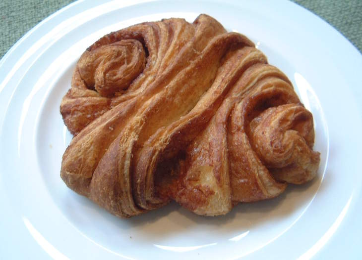
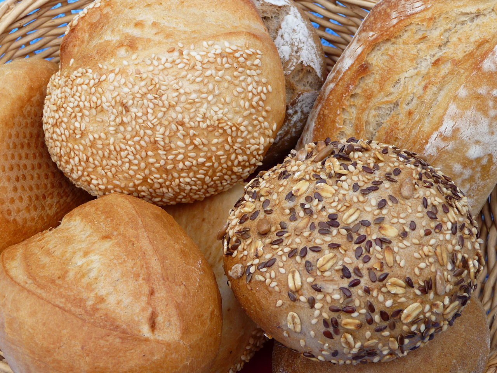
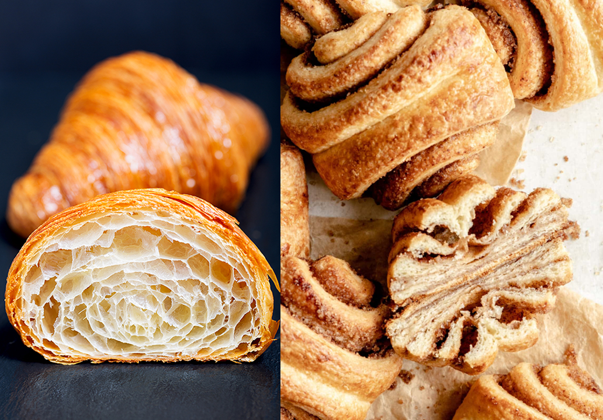
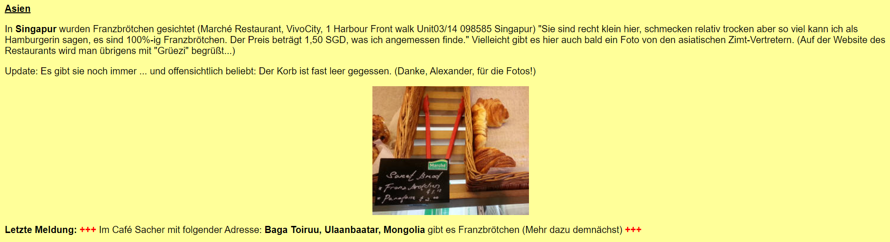
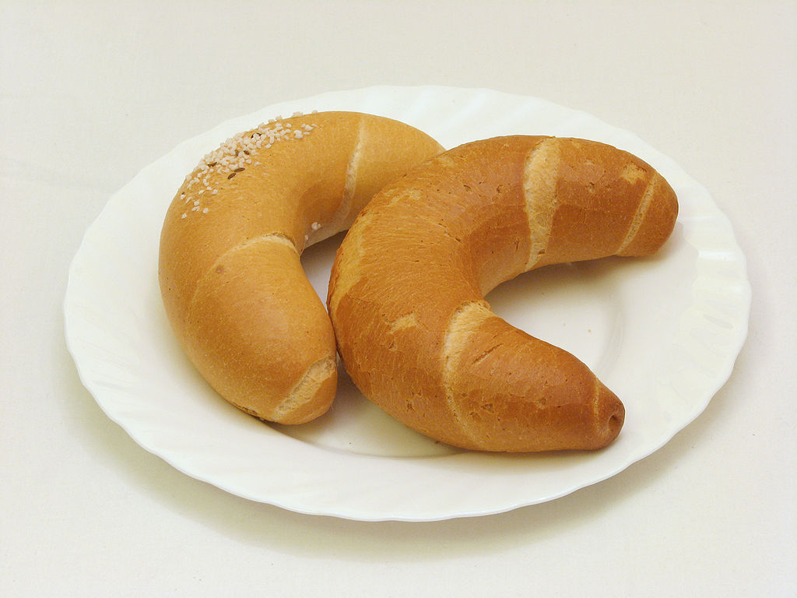

프란츠브뢰첸(Franzbrötchen)의 전설 - 함부르크의 프랑스군
게시: 2022-07-25T06:30:31+09:00
지난 편에서 언급했듯이, 나폴레옹의 1810년 함부르크 합병은 함부르크 시민들에게 매우 좋지 않은 상처를 남겼습니다. 대륙봉쇄령에 따른 경제적 몰락과 실업 사태에 덧붙여, 점령군 행세를 하는 프랑스군 병사들을 자신들의 집에 받아들여 먹이는 부담까지도 떠맡아야 했기 때문입니다. 원래 한자 동맹의 중심 도시이자 자유 도시로서 남다른 지위를 누리던 함부르크 시민들에게는 프랑스군이 시내에 주둔한다는 것 자체가 자존심을 크게 갉아먹는 일이었습니다. 프랑스군이 함부르크를 지배한 대략 8~-9년 동안 함부르크는 (좋든 나쁘든) 프랑스의 영향을 짧고도 강렬하게 받았습니다. 그런 영향은 몇몇 거리 이름에도 남아있지만 음식에도 남아있습니다. 바로 프란츠브뢰첸(Franzbrötchen)이라는 빵입니다.

(누가 마치 군홧발로 밟아놓은 크롸상처럼 보입니다. 이것이 바로 프란츠브뢰첸입니다.) 원래 함부르크에서는 브뢰첸(brötchen)이라는 독일 특유의 작은 빵을 즐겨 먹었습니다. 독일어로 빵을 brot라고 하는데 브뢰첸은 작은 brot, 즉 작은 롤빵이라는 뜻입니다. 그런데 프랑스군이 함브루크를 점령했던 10년도 안되는 사이에 프란츠브뢰첸(Franzbrötchen), 즉 프랑스식 작은 롤빵이 생겨났습니다.

(브뢰첸은 영어로 번역하면 그냥 roll, 롤빵입니다. 딱히 특정 모양의 빵을 브뢰첸이라고 하지는 않습니다.) 이 새로운 빵의 탄생에는 몇가지 카더라 썰이 있습니다. 가장 널리 돌아다니는 썰은 함부르크에 주둔한 프랑스군 병사들이 고향에서 먹던 프랑스식 크롸상을 그리워하다 함부르크 제빵사들에게 만드는 법을 말해주며 크롸상을 만들어 달라고 했다는 것입니다. 그런데 함부르크 제빵사들은 솜씨가 떨어져 프랑스 크롸상의 그 얇고도 부드러운 겹겹의 빵결을 만들어내지 못하고 그냥 묵직한 빵반죽이 겹쳐진 빵이 나왔답니다. 이 망작을 어떻게든 수습한답시고 함부르크 제빵사들이 이 크롸상이 되다 만 빵에 설탕과 계피를 잔뜩 뿌려 만들어진 것이 바로 프랑스식 작은 롤빵 프란츠브뢰첸이라는 썰입니다. 이 전설은 함부르크 제빵사들에게는 너무나 모욕적인 것이기 때문에, 다소 애국애향심이 돋보이는 썰도 있습니다. 위와 거의 비슷한데, 다만 함부르크 제빵사들이 프랑스 점령군에 대한 저항의 표시로, 크롸상을 잘 만들 수 있었음에도 불구하고 일부러 엉터리로 만든 것이 프란츠브뢰첸이라는 썰입니다. 다만 이 두 전설은 모두 프란츠브뢰첸은 크롸상에 비해 맛이 없고 실패작에 가까운 빵이라는 것을 암시하고 있습니다. 실제로 맛있는 음식은 반드시 여러 지역으로 퍼져나갑니다. 가령 스파게티나 피짜가 세계에 널리 퍼진 이유가 이탈리아가 세계를 정복한 초강국이기 때문은 아닙니다. 온 세상이 중국을 욕하지만 중국 음식을 싫어하는 사람은 그다지 많지 않습니다. 마찬가지로 프랑스 크롸상은 전세계에서 즐겨먹는 비싼 빵이지만, 함부르크의 프란츠브뢰첸은 간신히 함부르크와 그 일대의 북부 독일에만 퍼져 있을 뿐, 남부 독일에서도 프란츠브뢰첸은 흔한 빵은 아니라고 합니다. 그도 그럴 것이, 저 전설에서도 나오듯이 부드럽고 폭신한 크롸상의 조직에 비해 프란츠브뢰첸은 묵직한 빵 반죽이 그냥 겹쳐진 것에 불과한 모습을 보여주거든요.

(크롸상과 프란츠브뢰첸의 차이입니다... 물론 왼쪽이 크롸상, 오른쪽이 프란츠브뢰첸입니다.) 함부르크 사람들도 프란츠브뢰첸의 그런 현실이 너무 안타깝고 분했던지, 어떤 웹페이지에서는 프란츠브뢰첸이 결코 함부르크에서만 먹는 망한 빵이 아니며 잘 찾아보면 독일 내 다른 도시는 물론 유럽, 심지어 아시아나 남미에서도 프란츠브뢰첸을 파는 빵집이 있다면서 그런 빵집들을 조사하여 목록을 올려두는 곳이 있습니다.

(독일어를 영어로 번역해서 보니까, 아시아에서는 싱가폴의 어느 빵집에서 프란츠브뢰첸이 목격된 바가 있다고 합니다. 저 목격담을 전해준 사람에 따르면, 비록 이 싱가폴 빵집에서 파는 프란츠브뢰첸은 크기가 너무 작고 좀 마른 상태긴 하지만 함부르크 사람인 자신이 먹어보니 100% 확실한 프란츠브뢰첸이 맞답니다. 게다가 빵 바구니에 남은 것이 몇 개 없는 것으로 보아 잘 팔리는 것이 확실하다는 감격적인 증언을 함께 올려 놓았습니다.) 하지만 이런 전설들은 그냥 전설일 뿐, 사실일 것 같지는 않습니다. 황제인 나폴레옹도 대부분의 작전 기간 동안 감자와 빵조각을 넣은 수프를 먹었을 뿐, 부드러운 흰 빵을 먹는 경우는 많지 않았습니다. 그런 상황에서 일반 병사들이 밀가루와 버터가 잔뜩 들어가고 만드는데 많은 노력과 시간이 들어가는 크롸상을 일상적으로 먹었을 것 같지는 않습니다. 게다가 당시엔 크롸상이라는 빵 자체가 아직 프랑스에 없었습니다. 원래 크롸상은 17세기에 오스트리아 빈을 포위했다가 결국 함락시키지 못한 오스만 투르크를 조롱하기 위해 오스만 투르크의 상징인 초승달 모양으로 만든 오스트리아 빵인 킵펄(kipferl)에서 유래했다고 하지요. 그런데 이 킵펄이 흘러흘러 파리의 크롸상으로 탄생한 것은 오스트리아 포병 장교 출신인 창(August Zang)이라는 사람이 1839년 파리에 비엔나식 빵집("Boulangerie Viennoise")을 열면서 시작된 것이라고 하거든요. 따라서 1806년~1814년 동안 함부르크를 점령한 프랑스군이 '파리의 크롸상을 만들어보라'고 요구했을 리가 없습니다.

(크롸상의 원조인 오스트리아 빵 킵펄도 실은 헝가리의 초승달 모양 빵 키플리(Kifli)에서 유래된 것이라고 합니다.) 훨씬 신빙성이 있는 다른 전설은 원래 독일에서는 바게뜨 비슷하게 긴 빵을 프란츠브로트(franzbrot), 즉 프랑스 빵이라고 불렀는데, 함부르크의 제빵사가 그걸 짧게 자르고는 기름을 채운 팬에 튀겨서 만든 것이 프란츠브뢰첸이라는 것입니다. 이렇게 프란츠브뢰첸 전설만 보면 프랑스군의 함부르크 점령은 동화 속 이야기처럼 보이기도 합니다만, 실제로는 전혀 그렇지 않았습니다. 특히 1813년~1814년의 겨울은 무척이나 잔혹했습니다. 전세가 불리해져 함부르크가 포위될 위기에 처하자, 그곳을 지키고 있던 프랑스군 다부(Davout) 원수는 1813년 11월 함부르크 시내의 모든 가구가 6개월치의 식량을 준비하도록 명령했습니다. 당시 함부르크는 북부 독일의 경제권을 주무르는 부유한 도시였지만, 그렇다고 모든 시민들이 다 부유한 것은 아니었습니다. 1813년 12월부터 연합군이 본격적인 포위에 들어가자, 크리스마스 이브날 프랑스군은 대대적인 가구 검열을 실시했습니다. 그 결과 명령받은 대로 충분한 식량을 준비하지 못한 가족들은 모두 교회에 몰아넣었다가 크리스마스와 그 다음날에 걸쳐 모두 도시 밖으로 추방했습니다. 삭막한 겨울에 식량도 없이 쫓겨난 사람들 중 많은 수가 죽었습니다.
(이 묘비는 1813년 크리스마스 때 대책없이 성벽 밖으로 내몰렸다 죽은 사람들의 시신 1,138명을 매장한 대규모 묘지에 세워진 것입니다. 이 외에도 1814년 3월말 다부가 항복할 때까지의 포위전에서 3만의 사람들이 목숨을 잃었습니다.)
Source : https://de.wikipedia.org/wiki/Kipferl https://www.atlasobscura.com/foods/franzbrotchen https://redcurrantbakery.com/franzbrotchen-flaky-german-cinnamon-rolls/ https://dannwoellertthefoodetymologist.wordpress.com/2018/01/02/the-franzbrotchen-a-pastry-of-northern-germany-born-from-napoleonic-occupation/ https://web.archive.org/web/20160218202836/http://www.franzbroetchen.de/ausbreitung.htm https://www.beyond-history.com/en/english-beyond-history-blog/article/2017/11/19/hamburg-under-napoleon/ https://de.wikipedia.org/wiki/Br%C3%B6tchen https://en.wikipedia.org/wiki/Franzbr%C3%B6tchen